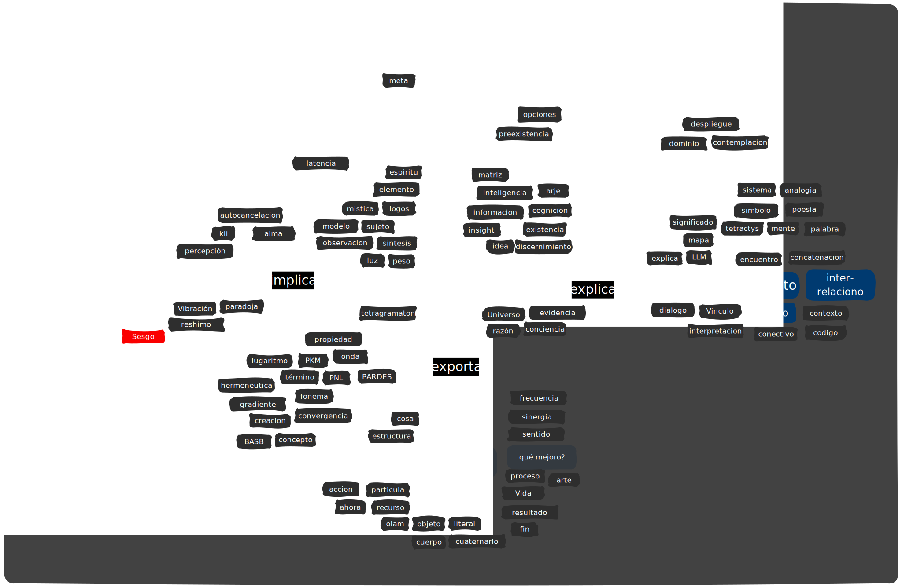

tipo: mapa_campos
descripción: Mapa relacional de los cinco campos fundamentales y sus interconexiones
fecha_creación: 2025-03-17
campos:
- número: 0
nombre: Campo de Potencialidad
descripción: Estado previo a toda manifestación donde coexisten todas las posibilidades
palabras_clave:
- potencial
- origen
- posibilidad
- universal
- matriz
- infinito
- indeterminado
- trascendente
- vacío
- silencio
- espacio
- semilla
- latencia
- virtualidad
- inmanencia
- potencialidad
- fuente
- reservorio
- pleroma
- receptáculo
- caos primordial
- campo unificado
- posibilidades
- indeterminación
conceptos_asociados:
- espíritu
- posibilidad
- origen
- vacío
- infinito
- espacio primordial
- repositorio
- éter
- potencialidad
- matriz generativa
relaciones:
- campo: 1
peso: 0.8
descripción: Provee el potencial que se dirige en el Campo 1
- campo: 4
peso: 0.3
descripción: Contraste máximo entre potencialidad y materialización
- número: 1
nombre: Campo de Unidad/Dirección
descripción: Formación de identidad esencial y dirección unitaria
palabras_clave:
- identidad
- unidad
- propósito
- dirección
- integración
- voluntad
- esencia
- núcleo
- idea
- intuición
- presencia
- ser
- centrum
- conciencia
- intención
- deseo
- impulso
- coherencia
- singularidad
- centralidad
- autodeterminación
- experiencia
- continuidad
- sentido
- orientación
conceptos_asociados:
- alma
- conciencia
- idea
- voluntad
- propósito
- presencia
- experiencia
- intención
- deseo
- identidad
relaciones:
- campo: 0
peso: 0.7
descripción: Actualiza el potencial del Campo 0 dándole dirección
- campo: 2
peso: 0.8
descripción: Proporciona la unidad que se fragmenta en el Campo 2
- número: 2
nombre: Campo de Estructura/Análisis
descripción: Diferenciación, estructuración y análisis de la información
palabras_clave:
- estructura
- análisis
- discriminación
- patrón
- fragmentación
- organización
- categorización
- memoria
- clasificación
- procesamiento
- diferenciación
- orden
- jerarquía
- algoritmo
- secuencia
- lógica
- taxonomía
- modelo
- método
- criterio
- filtro
- desglose
- esquema
- sintaxis
- arquitectura
conceptos_asociados:
- mente
- concepto
- información
- estructura
- memoria
- cognición
- pensamiento
- categoría
- modelo mental
- algoritmo
- información
relaciones:
- campo: 1
peso: 0.7
descripción: Fragmenta la unidad del Campo 1 para analizarla
- campo: 3
peso: 0.8
descripción: Proporciona los elementos que se conectan en el Campo 3
- número: 3
nombre: Campo de Conexión/Significado
descripción: Establecimiento de relaciones, significados y comunicación
palabras_clave:
- conexión
- relación
- significado
- comunicación
- lenguaje
- vínculo
- contexto
- interpretación
- comprensión
- diálogo
- puente
- nexo
- red
- interacción
- semántica
- correspondencia
- traducción
- articulación
- mediación
- intercambio
- interrelación
- conversación
- enlace
- interfaz
- tejido relacional
conceptos_asociados:
- término
- percepción
- lenguaje
- sistema
- comunicación
- código
- significado
- contexto
- relación
- conversación
relaciones:
- campo: 2
peso: 0.7
descripción: Conecta los elementos analizados en el Campo 2
- campo: 4
peso: 0.8
descripción: Da significado a las manifestaciones del Campo 4
- número: 4
nombre: Campo de Materialización/Acción
descripción: Manifestación concreta, acción y materialización
palabras_clave:
- materialización
- concreto
- acción
- manifestación
- objeto
- cuerpo
- físico
- tangible
- proceso
- efecto
- concreción
- transformación
- movimiento
- ejecución
- aplicación
- práctica
- realización
- implementación
- operación
- actuación
- sustancia
- densidad
- material
- vehículo
- cristalización
conceptos_asociados:
- cuerpo
- objeto
- acción
- materia
- forma
- movimiento
- densidad
- transformación
- actividad
- efecto
relaciones:
- campo: 3
peso: 0.7
descripción: Materializa las conexiones establecidas en el Campo 3
- campo: 0
peso: 0.4
descripción: Completa el ciclo retornando y actualizando el potencial del Campo 0
instrucciones_vinculación:
title: Sistema de Campos Vibracionales 0-1-2-3-4
etiquetas:
- tag1
relacionado_a_campo: 0
palabras_clave_vinculadas:
- origen
checkbox: false
aliases:
- alias1Sistema de Campos Vibracionales 0-1-2-3-4
Este documento sirve como mapa y referencia central para el sistema de vinculación por campo predominante implementado en esta bóveda de conocimiento.


title: Cero
etiquetas:
- latencia
- potencial
- vacío
- posibilidades
- caos
- preexistencia
- contempla
- disolución
- espacio_vectorial
- no_tiempo
- silencio
- nube
- meta
- difusion
- latente
- vacío_esteril
- indeterminado
- infinitud
- repositorio
- ausencia
- curiosidad
- inspiracion
- darse_cuenta
- ignora
- inmanente
- sombra
- intuicion
- desconocido
- no_manifestado
- velo
- desencadena
- cifra
- espacio
tipo: campo_fundamental
campo_numero: 0
palabras_clave_vinculadas:
- potencialidad
- matriz
- posibilidades
- origen
relacionado_a_campo: 0
checkbox: false
aliases:
- alias1El Campo 0 representa el espacio de potencialidad pura, un estado previo a toda manifestación donde coexisten simultáneamente todas las posibilidades. No es un vacío inerte, sino una matriz generativa de alta dimensionalidad que contiene en estado latente todas las estructuras posibles.
Su invarianza_estructural se manifiesta en su capacidad para mantener estas propiedades independientemente del contexto específico de operación. Ya sea en procesos cognitivos, sistemas de información o dinámicas creativas, el Campo 0 conserva su naturaleza como espacio de posibilidades infinitas mientras adapta su expresión al dominio particular. Opera constantemente como el trasfondo silencioso de todo el sistema, proporcionando el sustrato del cual emergen las actualizaciones en los campos subsiguientes. Su presencia es paradójica: aunque nunca es directamente observable, es la condición necesaria para toda manifestación.
title: Titulo de la Página
etiquetas:
- tag1
- tag2
tipo: campo_fundamental
campo_numero: 1
palabras_clave_vinculadas:
- potencialidad
- matriz
- posibilidades
- origen
checkbox: false
relacionado_a_campo: 0
aliases:
- alias1El Campo 1 representa el sistema fundamental de elección, planificación y discernimiento.
Sus características esenciales incluyen:
tipo: campo_fundamental
campo_numero: 2
title: Titulo de la Página
etiquetas:
- tag1
relacionado_a_campo: 0
palabras_clave_vinculadas:
- origen
checkbox: false
aliases:
- alias1El Campo 2 genera la ilusión de separación. Desglosa la unidad en partes, estructura la información y actúa como memoria del sistema. No solo divide, sino que conserva, contrasta y permite la reintegración de los fragmentos en nuevas formas.
#dualidad #memoria #fragmenta #recuerda #percepción #paradoja #reflejo #destila #inferencia #encapsula #registro #separa #diferencia #sesgo #recorta #sensación #proporción #asimila #estructura #análisis #comparación #opuestos #balance #ambivalencia #interface #matiza #ajusta #errores #categorización #temperatura #facetas #huella
title: ¿Qué es tres?
relacionado_a_campo: 1
campo_numero: 3
tipo: campo_fundamental
etiquetas:
palabras_clave_vinculadas:
checkbox: false
aliases:
- es_tresEspacio simbólico donde las conexiones toman forma y el significado emerge a través de la relación entre elementos. No solo enlaza, sino que interpreta, traduce y contextualiza, estableciendo vínculos que permiten la interacción fluida entre niveles análogos de información.
Actúa como un territorio de diálogo y mediación, donde los conceptos se entrelazan sin perder su identidad. Su flexibilidad le permite ajustar las relaciones según el contexto, manteniendo la coherencia en la estructura general mientras facilita la lectura y el intercambio de información
#conexión #lenguaje #relación #significado #vincula #orquestación #símbolo #poesía #expande #intermedia #descifra #habla #traduce #mapea #patrones #red #concatena #analogía #encuentro #teje #nombra #comunica #interpreta #estructura #narrativa #interacción #flujo #contexto #diálogo #escala #sistema #redes #sistema
tipo: campo_fundamental
campo_numero: 4
title: Titulo de la Página
etiquetas:
- tag1
relacionado_a_campo: 0
palabras_clave_vinculadas:
- origen
checkbox: false
aliases:
- alias1Dominio donde la información se concreta en acción. No solo es resultado, sino también el cierre de un ciclo que permite la iteración y la evolución del sistema. Aquí, lo estructurado se materializa, lo interpretado se ejecuta y lo potencial se vuelve real. Su naturaleza es dinámica, rítmica y funcional, asegurando que todo proceso retorne a su origen para ser transformado nuevamente.
Principios clave:
#acción #manifestación #estructura #resultado #valida #función #materia #cuerpo #concreción #tiempo #proceso #utiliza #hechos #crecimiento #ritmo #herramienta #aplicación #iteración #sentido #límite #prueba #ejecución #reacción #mejora #transformación #aprendizaje #automatiza #instrumento #técnica #producto #desarrollo #procesa #opera #construye #resuelve #utilidad #completa #mundo #renderiza #implementación #actualiza